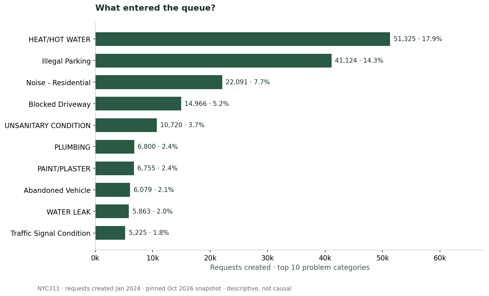
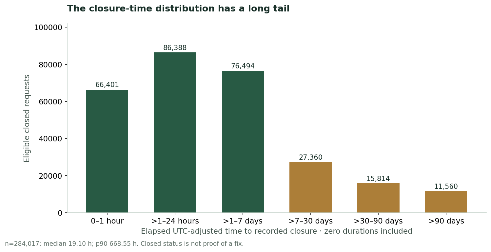
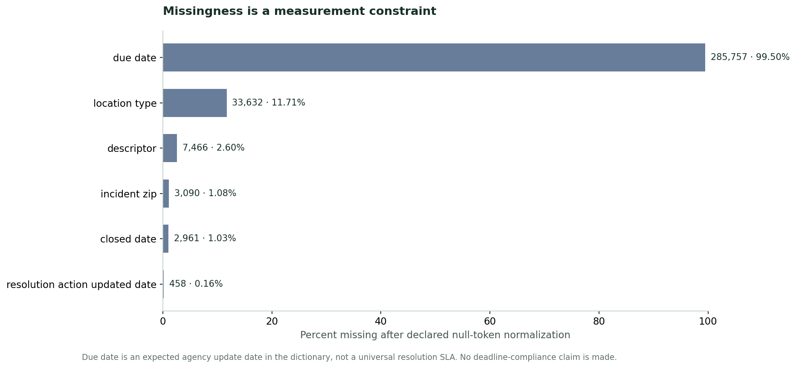
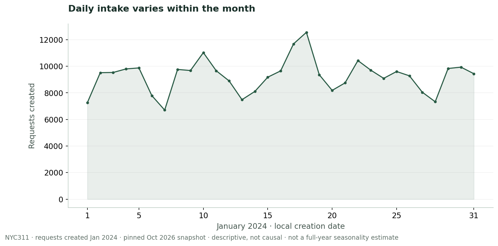
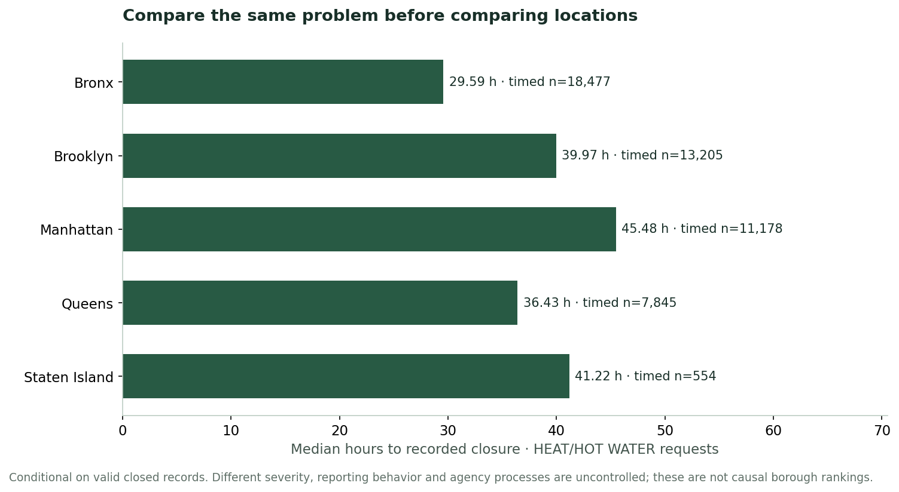

All accepted records in this slice
02 / PYTHON · PANDAS · DATA QUALITY
From messy requests
to trustworthy reporting.
An operations case study of NYC311: inspect intake demand, audit the fields behind performance reporting, and explore recorded closure times with honest denominators.
Explore the dataView source on GitHub (private repository; opens in a new tab)Download complete project
Public historical data · AI-assisted implementation · private repository, access required
THE BUSINESS QUESTION
Which demand should an operations analyst examine first, and which measures can they trust?
Use category concentration to prioritize review, then compare closure distributions within the same problem. Check missingness and contradictory dates before presenting a performance measure.
Recorded Closed is an administrative status. It is not evidence that a resident’s problem was fixed. This snapshot follows requests created in January 2024; closure dates may be much later.
INTERACTIVE EXPLORER
One scope. Consistent evidence.
All agencies · All boroughs
Closed with usable paired dates
Eligible Closed records only
Eligible Closed records only
No requests in this combination
An empty slice has no timing estimate. Choose another agency or borough.
INTAKE PATTERN
Requests by creation day
January 2024 · local New York date · height relative to the largest day in this slice
Exact daily and hourly counts
| Creation date | Requests |
|---|
| Hour (0–23) | Requests |
|---|
RECORDED CLOSURE
Keep the long tail visible
Exact duration and status counts
| Elapsed duration | Records |
|---|
| Status | Requests |
|---|
DEMAND MIX
Problem categories
Top eight by request count in the selected scope. Bars scale to the largest category. The table includes every category.
All problem categories with exact metrics
| Problem | Requests | Share | Timing eligible | Median | P90 |
|---|
Submission channels with exact metrics
| Channel | Requests | Share | Timing eligible | Median | P90 |
|---|
WHOLE-COHORT FINDINGS · UNAFFECTED BY FILTERS
Evidence that changes the conversation.
Demand is concentrated.
HEAT/HOT WATER, Illegal Parking, and Noise - Residential account for 114,540 requests (39.88%). Heat/hot water alone contributes 51,325.
Start operational review with these categories. Counts measure requests, not unique incidents or population-adjusted need.
The average hides the shape.
Across 284,017 timing-eligible records, the median is 19.10 hours, the mean is 317.63 hours, and P90 is 668.55 hours.
Report distribution and coverage together. The 24-hour threshold is an exploratory cut, not an agency SLA.
Status is not enough.
1,280 Closed records lack a closure date. Another 208 non-Closed records contain one; 75 records have a negative interval, all with non-Closed statuses.
Route contradictory records to a data-owner audit. Preserve them in request volume; do not invent closure dates.
WHOLE-COHORT QUALITY AUDIT · UNAFFECTED BY FILTERS
Cleaning with an audit trail.
Source rows are preserved in the pinned ZIP. IDs and ZIP codes stay strings. Whitespace and declared null tokens are normalized; missing categories stay Unknown. There are zero exact duplicate rows or conflicting IDs in this snapshot.
All 287,186 requests remain in volume analysis. Timing requires recorded Closed status, usable timestamps, nonnegative elapsed time, and no future closure relative to retrieval. No imputation or outlier deletion is used.
Missingness before and after normalization
| Field | Raw blanks | Normalized missing | Share |
|---|
due_date is 99.50% missing and describes an expected agency update date in the source dictionary. No universal resolution SLA is inferred.
OUTLIER INVESTIGATION · WHOLE COHORT
Flag first. Delete only with evidence.
The global Q3 + 1.5 × IQR fence is 8.90 days. It flags 49,374 eligible records. These records remain included; long administrative closure delays can be genuine.
| Policy | Timed n | Median h | Mean h |
|---|---|---|---|
| Default: keep valid durations | 284,017 | 19.10 | 317.63 |
| Exclude upper-fence flags | 234,643 | 6.71 | 28.09 |
| Exclude zero durations | 280,208 | 20.04 | 321.95 |
The large change under trimming demonstrates sensitivity to a rule; it does not establish that flagged rows are errors. The source bundle traces the 12 longest durations back to their original dates.
LIKE-FOR-LIKE CHECK · WHOLE COHORT, UNAFFECTED BY FILTERS
Compare the same problem before comparing locations.
For HEAT/HOT WATER, borough medians range from 29.59 hours in the Bronx to 45.48 in Manhattan among eligible Closed records. Different severity, reporting behavior, and administrative processes remain uncontrolled.
| Borough | Requests | Timing eligible | Median | P90 |
|---|
EXPORTABLE FIGURES · WHOLE COHORT
Inspect the evidence.










Independent raw-CSV validation: 38,284 scalar metric comparisons, 8,105 distribution counts, every filter combination, published group metrics, source quality audits, three sensitivity views, and 12 outlier traces. Six boundary tests cover cleaning decisions. Automated interaction checks are documented in the source.
This is a mutable public dataset pinned on 1 October 2026. One winter-month creation cohort does not establish annual seasonality, service effectiveness, resident-level need, or a causal agency/borough ranking. Non-Closed requests are censored from closure-time estimates; Closed requests without valid dates are also excluded from timing.
Browser rendering and real keyboard/mobile/screen-reader behavior remain unverified in this environment. The reproducible calculations and JavaScript event behavior are tested separately. See verification details and the project write-up.
Source attribution
Source: City of New York / NYC311, 311 Service Requests from 2020 to Present (opens in a new tab), dataset erm2-nwe9. Modified through the documented cleaning and aggregation. NYC Open Data terms (opens in a new tab) apply to source data. This independent portfolio study is not endorsed by NYC.
No addresses, coordinates, or complaint narratives are included in the selected source fields. Normal reproduction uses the included checksummed snapshot and requires no API request.